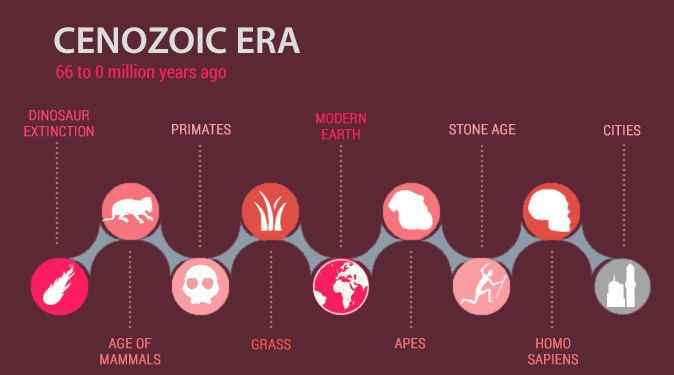

Senozoyik, yerküre tarihinin son 66 milyon yılını temsil eden ve içinde yaşadığımız şu anki jeolojik zamandır. Kretase-Paleojen yok oluşunun ardından başlayan bu dönem; kıtaların modern konumlarına ulaşması, iklimin kademeli olarak soğuması ve yaşamın bugün bildiğimiz formlarına kavuşmasıyla karakterize edilir.
Memelilerin Yükselişi ve Modern Dünyanın İnşası
Senozoyik Zaman, biyolojik ve iklimsel açıdan radikal değişimlerin yaşandığı bir süreçtir:
• Memeliler Çağı: Dinozorların neslinin tükenmesiyle açılan evrimsel boşluk, memeliler ve kuşlar tarafından hızla doldurulmuştur. Kuzey yarımkürede plasentalılar, güneyde ise keseliler baskın hale gelerek devasa boyutlara ulaşmışlardır.
• Flora (Bitki Örtüsü): Çiçekli bitkilerin ve kozalaklı ağaçların mutlak hakimiyeti bu dönemde pekişmiş, modern ormanlar ve stepler şekillenmiştir.
• Kıtasal Hareketler: Bu jeolojik zaman zarfında kıtalar, okyanus akıntılarını ve küresel iklimyi doğrudan etkileyecek şekilde bugünkü konumlarına hareket etmiştir.
• İklimsel Dönüşüm: Başlangıçta Paleosen-Eosen Termal Maksimum gibi aşırı sıcak evreler yaşansa da, zamanla iklim soğuyarak daha kuru bir hal almış ve Kuvaterner buzullaşması ile bugünkü dengesine ulaşmıştır.
• Başlangıç Miladı: Bu zaman dilimi, yaklaşık 66 milyon yıl önce Chicxulub asteroidinin çarpmasıyla tetiklenen Kretase-Paleojen yok oluşuyla başlamıştır.

Senozoyik Zaman boyunca dinozorların yok oluşundan modern şehirlere, memelilerin ve insanın evrimsel sürecini gösteren zaman çizelgesi.